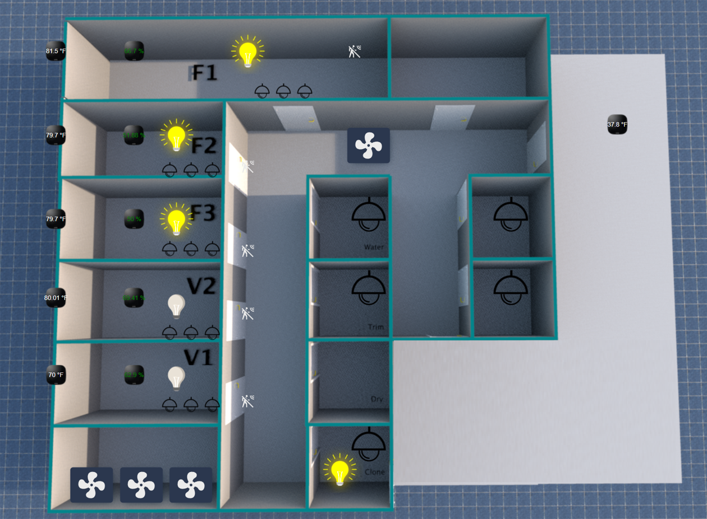
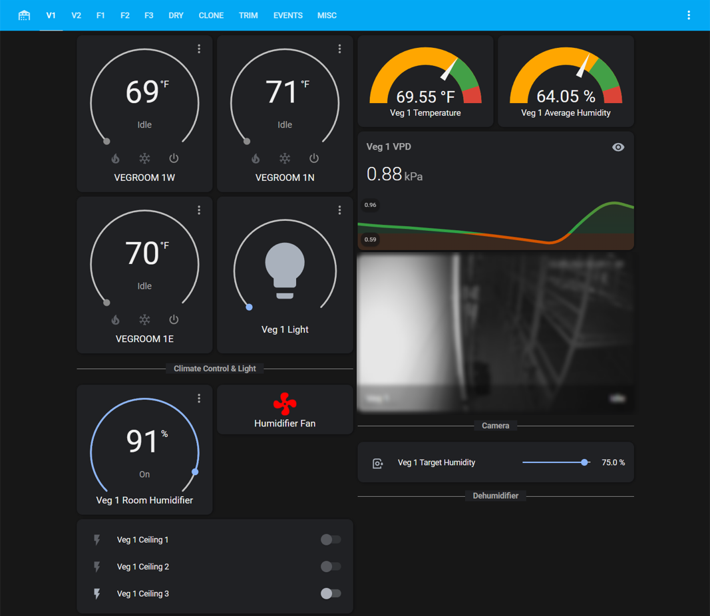
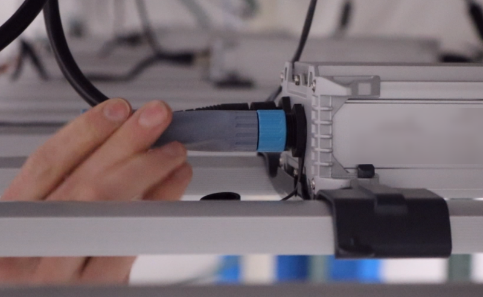

 <!-- CONTENT START -->
 <section ng-init="scrollTo('scroll')">
    <!-- PRODUCTS START -->
    <div class="container mt-5 mb-5">
        <div class="row">
            <div class="col-lg-7">
                <div class="product-desc-layer">
                    <h3 class="featurette-heading">Farm Assistant<br /><span
                            class="light-text text-muted">Access your entire facility from Mobile or desktop</span></h3>
                    <p>
                        View and modify electonically controlled elements of your entire facility.
                        <br> We will come to your facility and evaluate how Farm Assistant can 
                        bring your operation to the next level.
                        <h3 class="featurette-heading"><a href="#!/contact">Contact us</a></h3>
                    </p>
                </div>
            </div>
            <hr class="product-divider" style="margin-top: 10%">
        </div>

        <hr class="product-divider" style="margin-top: 5%">
        
        <div class="row col-mt-lg">
            <figure class="product-features">
                
            </figure>
        </div>

        <div class="row">
            <hr class="product-divider" style="margin-top: 1%">
        </div>

        <div class="col">
            <figure class="product-features">
                
            </figure>
        </div>

        <hr class="product-divider" id="FL-1">

        <div class="row">
            <div class="col-lg-7">
                <div class="product-desc-layer">
                    <h3 class="featurette-heading"><br/>FL-1 Dimmer Module<br/><span
                            class="light-text text-muted">LOW COST EDGE COMPUTATION</span></h3>
                    <p>
                        This WiFi protocol device modulates between 1 and 80 grow lights. When 
                        a lighting schedule is modified in Farm Assistant, that schedule is programmed 
                        to the FL-1 dimmer via WiFi mesh. As long as the dimmer is connected, the schedule will execute.
                        <br>
                        <h3 class="featurette-heading"><a href="#!/contact">Contact us</a>
                    </p>
                </div>
            </div>
            <hr class="product-divider" style="margin-top: 10%">
        </div>

        <hr class="product-divider">

        <div class="col">
            <figure class="product-features">
                
            </figure>
        </div>
    </div>
    <!-- PRODUCTS END -->
</section> 
<!-- CONTENT END -->